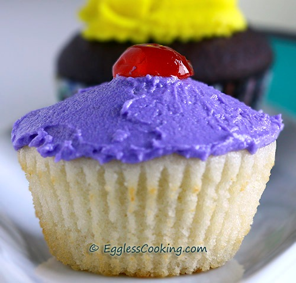

Eggless Vanilla Cupcake
If you are allergic to egg but love to eat cupcake. Now you can enjoy eggless cupcake. With these simple easy steps.
Ingredients
- 2 teaspoons Ener-G egg replacer powder
- 3 tablespoons lukewarm water
- 1 and 3/4 cups Milk (2% milk)
- 1/2 cup Water, divided
- 1/2 cup Butter, melted
- 1 and 1/4 cups Sugar
- 1 and 1/2 teaspoons Vanilla Extract
- 2 and 1/2 cups All Purpose Flour
- 2 and 1/2 teaspoons Baking Powder
- 1/2 teaspoon Salt
Procedure
- Preheat the oven at 375F/190C for 15 minutes. Grease the muffin tins lightly or line it with paper liners. I brushed the inside of the liners with melted butter which gave a nice color on the sides of the cupcakes.
- Whip the egg replacer powder and 3 tablespoons of water, preferably in a blender for better results. Or just do it hand. The mixture should be frothy.
- Add the milk and 1/4 cup of water to the egg replacer mixture and stir it well.
- In a large bowl, stir together the flour, baking powder, and salt. Set it aside.
- In another bowl, cream the butter and sugar until light and fluffy. This may take upto 2-3 minutes.
- Add the vanilla extract and remaining 1/4 cup of water, and beat well.
- Add the flour mixture and the egg replacer/milk mixture in parts alternating.
- Beat until combined.
- Fill in the muffin cups 3/4th full and bake for about 20-30 minutes or until a toothpick inserted into the center of a cupcake comes out clean. Mine was done around 24 minutes.
- Remove from the oven and place on a wire rack to cool.
Cupcake

Eggless Vanilla Cupcake.